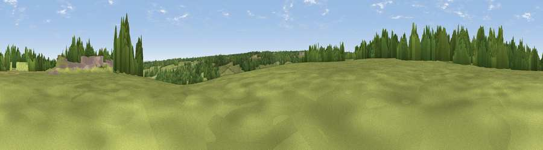

Matts Hill
#36286 in England · top 66% of its area beats it · near BredhurstThe view, rendered

A 360° render of this exact spot computed from the terrain model, tree cover and land cover — summer colours, afternoon light, calibrated against photographs of famous viewpoints. Real trees, hedges and buildings will differ in detail.
The panorama
Grey silhouette: terrain skyline in each direction (720 bearings, Earth curvature and refraction included). Dashed green: skyline with trees (+15 m) and buildings (+8 m) as obstacles. Blue strip: how far the ground is visible on each bearing.
Where the view opens
Wedge length = distance to the farthest visible ground on that bearing (vegetation-aware). Rings at 10, 25 and 50 km.
What fills the view
47% grassland · 33% woodland · 12% cropland · 5% built-up · 3% water
Angular shares of the visible panorama (visual magnitude), not map area. Landscape diversity 0.54 (0–1 Shannon).
Key numbers
More beautiful places nearby
The staircase of upgrades: each row has a higher view potential than everything closer. Driving times are estimates from straight-line distance, calibrated against real road routing — check an actual route before setting out.
| Place | Direction | Drive | Score |
|---|---|---|---|
| Viewpoint near Hale | NW · 4 km | ~9 min | 40.4 |
| Viewpoint near Newington | ENE · 4 km | ~9 min | 48.0 |
| Viewpoint near Detling | SW · 5 km | ~10 min | 62.5 |
| Viewpoint near Thurnham | SSW · 5 km | ~10 min | 63.5 |
| Viewpoint near Boxley | SW · 5 km | ~11 min | 65.4 |
| Viewpoint near Boxley | WSW · 6 km | ~12 min | 68.6 |
| Viewpoint near Westwell | SE · 22 km | ~37 min | 72.2 |
| Viewpoint near Lympne | SE · 39 km | ~59 min | 72.6 |
51.33541, 0.60671 · source: osm peak · position refined by local search. Computed location — check access rights before visiting.